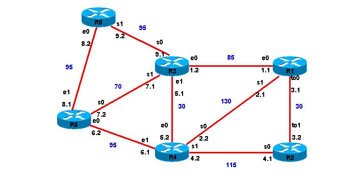
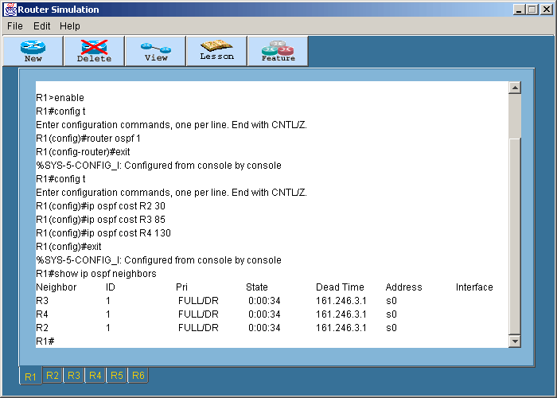
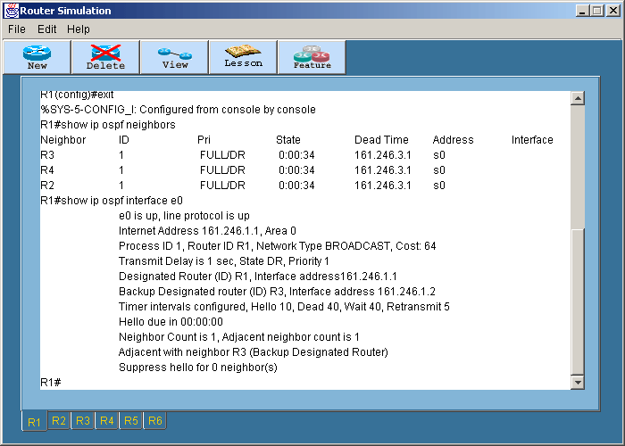
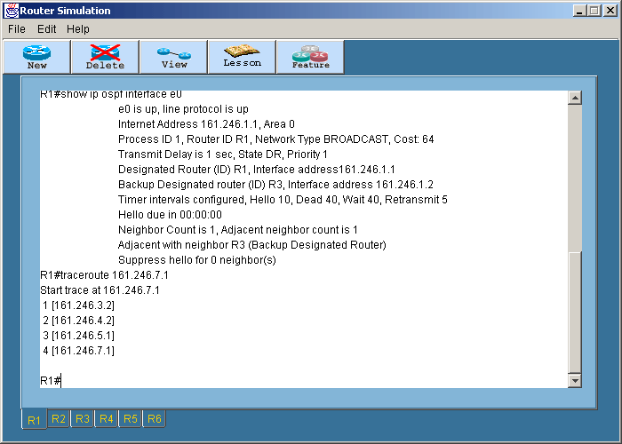
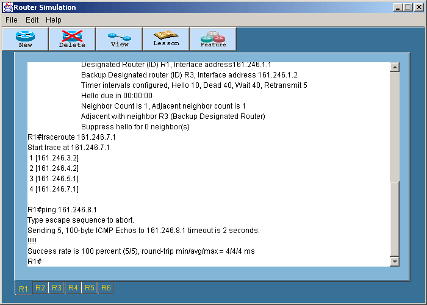

Dynamic Routing with OSPF
การทดลองนี้เป็นการ
- Login ไปยังเราเตอร์ที่ต้องการ เข้าสู่ Privilege Mode โดยพิมพ์ en
หรือ enable
- ก่อนที่จะทำ Dynamic Routing แบบ ospf เราต้องแน่ใจก่อนว่าไม่มี rip
routing โดยใช้คำสั่ง no
rip ตัวอย่าง :
RouterA#config t
RouterA(config)#no router rip
เราเตอร์อื่นๆก้อทำเช่นเดียวกัน
- โดยในการทดลองนี้จะให้ทำการสร้างเน็ตเวิร์คใหม่ดังรูป

หมายเหตุ เลขไอพีแอดเดรสนี้เป็นลขโดยย่อคือตัดมาเฉพาะ
2 เลขหลัง โดยเลขนำหน้าคือ 161.246 เช่น 1.1 มีความหมายเท่ากับ
161.246.1.1
และเลขสีน้ำเงินหมายถึงค่า weight ของเราเตอร์แต่ละคู่ ที่ทำการกำหนดขึ้นมา
- ทำการกำหนด ip address ดังนี้
Router1#config t
Router1(config)#hostname R1
R1(config)#int e0
R1(config-if)#ip address 161.246.1.1 255.255.255.0
R1(config-if)#no shut
R1(config-if)#int s0
R1(config-if)#ip address 161.246.2.1 255.255.255.0
R1(config-if)#no shut
R1(config-if)#int s1
R1(config-if)#ip address 161.246.3.1 255.255.255.0
R1(config-if)#no shut
Router2#config t
Router2(config)#hostname R2
R2(config-if)#int s1
R2(config-if)#ip address 161.246.3.2 255.255.255.0
R2(config-if)#no shut
R2(config-if)#int s0
R2(config-if)#ip address 161.246.4.1 255.255.255.0
R2(config-if)#no shut
Router3#config t
Router2(config)#hostname R3
R3(config-if)#int s0
R3(config-if)#ip address 161.246.1.2 255.255.255.0
R3(config-if)#no shut
R3(config-if)#int s1
R3(config-if)#ip address 161.246.9.1 255.255.255.0
R3(config-if)#no shut
R3(config-if)#int e0
R3(config-if)#ip address 161.246.7.1 255.255.255.0
R3(config-if)#no shut
R3(config-if)#int e1
R3(config-if)#ip address 161.246.5.1 255.255.255.0
R3(config-if)#no shut
Router4#config t
Router4(config)#hostname R4
R4(config-if)#int s0
R4(config-if)#ip address 161.246.4.2 255.255.255.0
R4(config-if)#no shut
R4(config-if)#int s1
R4(config-if)#ip address 161.246.2.2 255.255.255.0
R4(config-if)#no shut
R4(config-if)#int e0
R4(config-if)#ip address 161.246.5.2 255.255.255.0
R4(config-if)#no shut
R4(config-if)#int e1
R4(config-if)#ip address 161.246.6.1 255.255.255.0
R4(config-if)#no shut
Router5#config t
Router5(config)#hostname R5
R5(config-if)#int s0
R5(config-if)#ip address 161.246.8.2 255.255.255.0
R5(config-if)#no shut
R5(config-if)#int s1
R5(config-if)#ip address 161.246.9.1 255.255.255.0
R5(config-if)#no shut
Router6#config t
Router6(config)#hostname R6
R6(config-if)#int s0
R6(config-if)#ip address 161.246.8.1 255.255.255.0
R6(config-if)#no shut
R6(config-if)#int e0
R6(config-if)#ip address 161.246.7.2 255.255.255.0
R6(config-if)#no shut
R6(config-if)#int e1
R6(config-if)#ip address 161.246.6.2 255.255.255.0
R6(config-if)#no shut
- ทำการ save โดยการกด copy run start
- ใช้คำสั่งเพื่อทำการเลือกโปรโตคอลแบบ OSPF ดังนี้
Router#config t
Router(config)#router ospf process-id
โดยทำที่ทุกๆ เราเตอร์เพราะเราต้องการให้ทุกๆเราเตอร์อยู่ในโปรโตคอล OSPF
ในที่นี่ process-id เป็นอะไรก็ได้ไม่มีผลต่อโปรแกรมนี้
เช่น
Router(config)#router ospf 11
- คำสั่งในการกำหนด weight ให้กับเราเตอร์ทำได้โดยใช้คำสั่ง ip ospf cost
<router_name><router_name> ดังนี้
R1(config)#ip ospf cost R2 30
R1(config)#ip ospf cost R3 85
R1(config)#ip ospf cost R4 130
R2(config)#ip ospf cost R4 115
R3(config)#ip ospf cost R4 30
R3(config)#ip ospf cost R5 95
R3(config)#ip ospf cost R6 70
R4(config)#ip ospf cost R6 95
R5(config)#ip ospf cost R6 95
- ใช้คำสั่งทดสอบการเชื่อมต่อเช่น
R1#show ip ospf neighbors

R1#show ip ospf interface e0

R1#tracert 161.246.7.1

R1#ping 161.246.8.1

สำหรับโหมดการทำงานทั้งหมดของเราเตอร์สามารถดูได้ในสรุปคำสั่งทั้งหมด
|
 Lesson 8
Lesson 8